Escribe en cualquier idioma Quechua
con la agilidad de un colibrí.
Versión 1.4
Haz clic para descargar el teclado:
Para acceder a un carácter especial, pulsa la tecla e inmediatamente desliza el dedo en una dirección. Dependiendo de hacia dónde lo deslices, aparecerá escrito uno de los caracteres especiales.
Este GIF animado muestra la función con la tecla C:
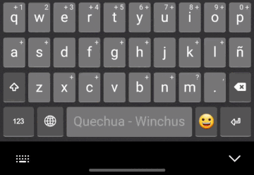
Desliza para abajo para conseguir la Ć:
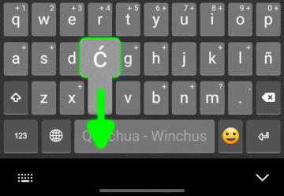
Para acceder a un carácter especial, mantén presionada la tecla relacionada por un momento. Ahora sin soltar, desliza al carácter deseado, hasta que se ponga azul, luego, suelta.
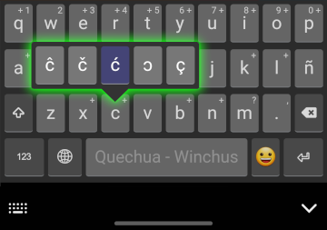
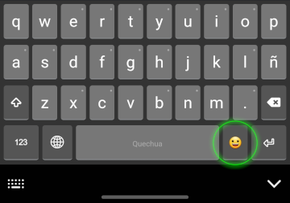
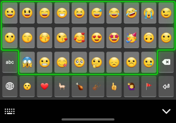
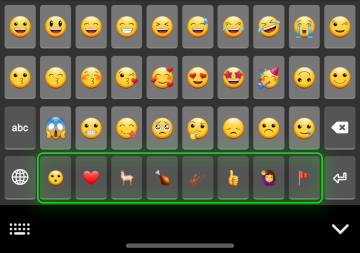
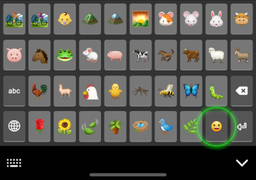
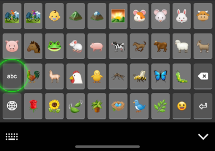
Este teclado fue diseñado usando como base el Teclado Latinoamericano.
siempre que veas un gráfico como Alt, ., o U, hace referencia a una tecla en tu teclado.
siempre que veas un gráfico como Ć o Ü , hace referencia a un carácter resultado que sale en la pantalla.
Siempre que salga Mayús dos o tres veces en un atajo, simplemente mantén presionada la tecla Mayús mientras tecleas las otras dos teclas una por una.
| Caracteres | Minúscula | Mayúscula |
|---|---|---|
| ć Ć | ´ + C | ´ + Mayús + C |
| ŕ Ŕ | ´ + R | ´ + Mayús + R |
| ś Ś | ´ + S | ´ + Mayús + S |
| ĉ Ĉ | Alt + { + C | Alt + { + Mayús + C |
| ĉ Ĉ (2da opción) |
Mayús + 6 + C | Mayús + 6 + Mayús + C |
| č Č | Mayús + 5 + C | Mayús + 5 + Mayús + C |
| š Š | Mayús + 5 + S | Mayús + 5 + Mayús + S |
| ꞌ Ꞌ | ´ + ' | ´ + Mayús + ' |
| Puntuación | Abertura | Cierre |
|---|---|---|
| « » | < + < | Mayús + > + Mayús + > |
| ‹ › | < + < + < | Mayús + > + Mayús + > + Mayús + > |
| < > | Alt + , | Alt + . |
| (Para teclados estadounidenses. Recuerda usar la Alt derecha.) | ||
| “ ” | Mayús + 2 + Mayús + 2 | Mayús + 2 + Mayús + 2 + Mayús + 2 |
| ‘ ’ | ' + ' | ' + ' + ' |
| — (Guion largo) |
- + . | |
En todo el mundo hay más de 1.5 mil millones de personas que hablan un idioma minoritario. Para muchos de ellos usar su idioma en los sectores digitales resulta un gran reto. Caracteres no disponibles. Un autocorrector determinado a “corregir” cada palabra indígena por una palabra de otro idioma mayoritario. Para muchas personas, este reto es muy abrumador e influye en que su idioma se use menos, privando así al hablante de su derecho a expresarse completamente, y quitando oportunidades para que el mundo conozca su belleza.
En el mundo hay más de siete millones de Quechuahablantes (Ethnologue). A pesar de que los sistemas de escritura en esta familia de idiomas sean parecidos al sistema español, muchos tienen consonantes adicionales. Por ende hasta ahora los recursos disponibles para teclear en Quechua han sido muy técnicos y difíciles de usar.
La meta de este teclado es simplificar la digitación del Quechua en todos los dispositivos. (Gracias a la plataforma Keyman, ahora el desarrollador sólo tiene que configurarlo una vez y mantener una sola versión sin necesitar un gran equipo de programadores para adaptarlo y readaptarlo a cada sistema operativo).
Este teclado fue diseñado usando como base el Teclado Latinoamericano. También se puede usar en teclados físicos para escribir en español e inglés, minimizando la necesidad de cambiar la configuración de teclado. Todos los caracteres disponibles en los teclados latinoamericanos y estadounidenses están disponibles en el teclado Winchus, aunque algunos símbolos han sido movidos, o las combinaciones de teclas han sido cambiadas debido a las diferencias entre los dos teclados y las necesidades del teclado Quechua.
Este documento explica cómo usar el teclado cuando se usa en un dispositivo móvil (como un celular) y en un dispositivo físico (como una laptop).
Primero en esta introducción se indicará cuáles son los nuevos caracteres disponibles. En las secciones siguientes se explicará primero cómo instalar el teclado, y después cómo usarlo en los dispositivos correspondientes.
Las nuevas consonantes disponibles son derivadas de la C, H, R, y S.
| Letra | Acento | Circunflejo | Carón |
|---|---|---|---|
| C | ć Ć | ĉ Ĉ | č Č |
| H | h́ H́ | - | - |
| R | ŕ Ŕ | - | - |
| S | ś Ś | ŝ Ŝ | š Š |
Para representar la glotal que aparece frecuentemente en las variantes sureñas, tradicionalmente se ha usado la comilla simple (‘). Sin embargo, eso puede presentar dificultades en la representación del texto y en su procesamiento. (Por ejemplo, ¿cómo verificar que cada citación lleva ambas comillas cuando el mismo carácter también se usa en la formación de palabras?) Por eso este teclado también dispone del saltillo, otra manera de representar la glotal que hasta ahora tiene más uso en los idiomas indígenas de México. El saltillo se parece mucho a la comilla simple del español, pero no se dobla a un lado, como suele ocurrir cuando la comilla simple se usa para hacer una citación. Se debe tener en consideración que al usarla, podría surgir una dificultad al buscar una palabra si está escrita con la comilla en la búsqueda y con el saltillo en el texto (o viceversa). Puedes usar la opción que prefieras.
| - | Minúscula | Mayúscula |
|---|---|---|
| Saltillo (glotal) | ꞌ | Ꞌ |
| - | Abertura | Cerrada |
|---|---|---|
| Citación | « | » |
| Citación incrustada | ‹ | › |
| Comillas inglesas | “ | ” |
| Comillas simples | ‘ | ’ |
| Guion largo | — | |
Siempre que sale Alt, recuerda que habla de la Alt Derecha (o Alt Gr) que está a la derecha de la barra de espacio. Igual como en el teclado latinoamericano, la Alt que está a la izquierda no tendrá el efecto deseado.
Siempre que veas un gráfico como Alt, ., o U, este hace referencia a una tecla en tu teclado. Cuando veas un carácter como Ć, hace referencia al carácter resultado, que aparece en la pantalla.
La configuración es muy parecida al teclado latinoamericano. Si estás viendo desde tu celular, gíralo para verla en modo horizontal:
Para escribir los acentos, usa la misma tecla que es para poner acentos en las vocales: la ´, que suele estar a la derecha de la P.
| Caracteres | Minúscula | Mayúscula |
|---|---|---|
| ć Ć | ´ + C | ´ + Mayús + C |
| h́ H́ | ´ + H | ´ + Mayús + H |
| ŕ Ŕ | ´ + R | ´ + Mayús + R |
| ś Ś | ´ + S | ´ + Mayús + S |
Siempre que salga Mayús dos o tres veces en un atajo, simplemente mantén presionada la tecla Mayús mientras tecleas las otras dos teclas una por una.
| Caracteres | Minúscula | Mayúscula |
|---|---|---|
| ĉ Ĉ | Alt + { + C | Alt + { + Mayús + C |
| ĉ Ĉ (2da opción) |
Mayús + 6 + C | Mayús + 6 + Mayús C |
Siempre que salga Mayús dos o tres veces en un atajo, simplemente mantén presionada la tecla Mayús mientras tecleas las otras dos teclas una por una.
| Caracteres | Minúscula | Mayúscula |
|---|---|---|
| č Č | Mayús + 5 + C | Mayús + 5 + Mayús C |
| š Š | Mayús + 5 + S | Mayús + 5 + Mayús S |
| Carácter | Minúscula | Mayúscula |
|---|---|---|
| ꞌ Ꞌ | ´ + ' | ´ + Mayús + ' |
En otras palabras, para teclear el saltillo (glotal) minúscula, teclea la tecla de acento (a la derecha de la P) y después la tecla de comilla (a la derecha de la 0). Para el saltillo mayúscula, teclea la tecla de acento, presiona Mayús, y mantenla presionada mientras tecleas la tecla de comilla.
Para escribir las vocales con acentos o con umlauts (¨), es igual que en el teclado latinoamericano. Por ejemplo:
Si tienes un teclado Latinoamericano, teclear las comillas angulares será un poco más fácil. Teclea la < dos veces seguidas para conseguir «. Teclea la < una vez más para conseguir la ‹. Lo mismo aplica para la comilla de cierre.
Si tu teclado es estadounidense, usa los atajos siguientes:
| Carácter | Combinación de teclado estadounidense |
Nota |
|---|---|---|
| < | Alt + , | Recuerda usar la Alt derecha. |
| > | Alt + . | Recuerda usar la Alt derecha. |
Algunos caracteres que pueden ser difíciles de encontrar:
| Carácter | Combinación | Nota |
|---|---|---|
| ` | Alt + } + Espacio | cambia el Espacio por una vocal para conseguir la vocal con el acento grave |
| ~ | Alt + + | |
| @ | Alt + Q | Recuerda usar la Alt derecha |
| \ | Alt + ‘ | Recuerda usar la Alt derecha |
| / | Mayús + 7 | |
| | | | | La tecla de pleca | suele estar encima del Tab |
| ° | Mayús + | | La tecla de pleca | suele estar encima del Tab |
| ¬ | Alt + | | La tecla de pleca | suele estar encima del Tab. Recuerda usar la Alt derecha. |
| ^ | Alt + { + Espacio | Recuerda usar la Alt derecha |
| “ | Mayús + 2 + Mayús + 2 | |
| ” | Mayús + 2 + Mayús + 2 + Mayús + 2
|
| |
| ‘ | ' + ' | La ' suele estar a la derecha de la 0 |
| ’ | ' + ' + ' | La ' suele estar a la derecha de la 0 |
| — | - + . |
Si hasta ahora solo has usado el teclado estadounidense, verás que este teclado tiene muchas diferencias en cuanto a como digitar los símbolos y signos de puntuación.
El teclado Winchus, por lo general, sigue el mismo patrón del teclado latinoamericano para los símbolos. Al principio puede costar un poco acostumbrarse, pero después se hace fácil recordar. El conocimiento también será de mucho provecho cuando te toque usar un teclado latinoamericano.
Aquí está la lista completa de diferencias entre el teclado estadounidense y el teclado Winchus. En la primera columna, las filas están ordenadas de acuerdo a como los caracteres aparecen en el teclado estadounidense. En la segunda columna, las teclas han sido indicadas con las etiquetas que normalmente tendrían en un teclado estadounidense.
⚠ OJO: Si tu teclado físico es un teclado latinoamericano, este cuadro te resultará confuso. Mira los cuadros más arriba para teclados físicos latinoamericanos.
| Carácter | Combinación (con teclas de un teclado EEUU) |
Nota |
|---|---|---|
| Símbolos de la fila 1 del teclado estadounidense: | ||
| ` | Alt + \ + Spacebar (Espacio) | Cambia el Spacebar (Espacio) por una vocal para conseguir la vocal con el acento grave |
| ~ | Alt + } | |
| ! | (Sin cambio) | |
| @ | Alt + Q | Recuerda usar la Alt derecha |
| # | (Sin cambio) | |
| $ | (Sin cambio) | |
| % | (Sin cambio) | |
| ^ | Alt + ‘ + Spacebar (Espacio) | Recuerda usar la Alt derecha |
| & | Shift + 6 | |
| * | Shift + ] | |
| ( | Shift + 8 | |
| ) | Shift + 9 | |
| - | / | |
| _ | Shift + / | |
| = | Shift + 0 | |
| + | ] | |
| Símbolos de la fila 2 del teclado estadounidense: | ||
| [ | Shift + ‘ | |
| ] | Shift + \ | |
| { | ‘ | El apóstrofe, a la izquierda del Enter |
| } | \ | |
| \ | Alt + - | Recuerda usar la Alt derecha |
| | | ` | La tecla del acento grave ` suele estar encima del Tab |
| Símbolos de la fila 3 del teclado estadounidense: | ||
| ; | Shift + , | |
| : | Shift + . | |
| ' | - | |
| " | Shift + 2 | |
| Símbolos de la fila 4 del teclado estadounidense: | ||
| , | (Sin cambio) | |
| < | Alt + , | Recuerda usar la Alt derecha |
| . | (Sin cambio) | |
| > | Alt + . | Recuerda usar la Alt derecha |
| ? | Shift + - | |
| / | Shift + 7 | |
| Símbolos que no aparecen en el teclado estadounidense: | ||
| ´ | [ o [ + Spacebar (Espacio) |
El acento agudo. Para acentuar un carácter, primero teclea [ y después el carácter que deseas acentuar. Si quieres solo el acento, teclea [ y después Spacebar (Espacio) |
| ¿ | = | |
| ¡ | Shift + = | |
| ° | Shift + ` | La tecla del acento grave ` suele estar encima del Tab |
| ¬ | Alt + ` | La tecla del acento grave ` suele estar encima del Tab. Recuerda usar la Alt derecha. |
| “ | Shift + 2 + 2 | |
| ” | Shift + 2 + 2 + 2 | |
| ‘ | - + - | |
| ’ | - + - + - | |
| — | / + . | |
¡Winchus no tiene autocorrector! No va a cambiar tus palabras en Quechua por palabras en español, como hacen los otros teclados.
Nota que en muchas teclas hay un signo más (“+”) en el rincón superior derecho. Eso indica que hay otros caracteres relacionados disponibles:
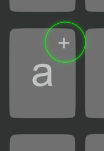
Este GIF animado muestra la función con la tecla C:
Desliza para abajo para conseguir la Ć:
| Cꞌ | ||||
| ⬆ | ||||
| Ĉ | ⬅ | C | ⮕ | Č |
| ⬇ | ⬊ | |||
| Ć | Ç |
A
C
E
H
I
K
L
M
N
O
P
Q
R
S
T
U
W
Y
.
| A | ||||
|---|---|---|---|---|
| Ä | @ | |||
| ⬆ | ⬈ | |||
| A | ⮕ | Á | ||
| ⬇ | ||||
| A' | ||||
| C | ||||
|---|---|---|---|---|
| Cꞌ | ||||
| ⬆ | ||||
| Ĉ | ⬅ | C | ⮕ | Č |
| ⬇ | ⬊ | |||
| Ć | Ç | |||
| E | ||||
|---|---|---|---|---|
| Ë | 3 | |||
| ⬆ | ⬈ | |||
| E | ⮕ | É | ||
| H | ||||
|---|---|---|---|---|
| H' | ||||
| ⬆ | ||||
| H | ||||
| ⬇ | ||||
| H́ | ||||
| I | ||||
|---|---|---|---|---|
| 8 | Ï | |||
| ⬉ | ⬆ | |||
| I | ⮕ | Í | ||
| ⬇ | ||||
| I' | ||||
| K | ||||
|---|---|---|---|---|
| K' | ||||
| ⬆ | ||||
| K | ||||
| L | ||||
|---|---|---|---|---|
| L' | ||||
| ⬆ | ||||
| L | ||||
| M | ||||
|---|---|---|---|---|
| \ | ' | ; | ||
| ⬉ | ⬆ | ⬈ | ||
| ¿ | ⬅ | M | ⮕ | ? |
| ⬇ | ||||
| — | ||||
| N | ||||
|---|---|---|---|---|
| N' | ||||
| ⬆ | ||||
| N | ||||
| O | ||||
|---|---|---|---|---|
| 9 | Ö | |||
| ⬉ | ⬆ | |||
| Ó | ⬅ | O | ||
| P | ||||
|---|---|---|---|---|
| 0 | P' | |||
| ⬉ | ⬆ | |||
| P | ||||
| Q | ||||
|---|---|---|---|---|
| Q' | 1 | |||
| ⬆ | ⬈ | |||
| Q | ||||
| R | ||||
|---|---|---|---|---|
| 4 | ||||
| ⬈ | ||||
| R | ||||
| ⬇ | ||||
| Ŕ | ||||
| S | ||||
|---|---|---|---|---|
| Ŝ | ⬅ | S | ⮕ | Š |
| ⬇ | ||||
| Ś | ||||
| T | ||||
|---|---|---|---|---|
| T' | 5 | |||
| ⬆ | ⬈ | |||
| T | ||||
| U | ||||
|---|---|---|---|---|
| 7 | Ü | |||
| ⬉ | ⬆ | |||
| U | ⮕ | Ú | ||
| ⬇ | ||||
| U' | ||||
| W | ||||
|---|---|---|---|---|
| 2 | ||||
| ⬈ | ||||
| W | ||||
| Y | ||||
|---|---|---|---|---|
| 6 | Y' | |||
| ⬉ | ⬆ | |||
| Y | ||||
| T | ||||
|---|---|---|---|---|
| T' | 5 | |||
| ⬆ | ⬈ | |||
| T | ||||
| U | ||||
|---|---|---|---|---|
| 7 | Ü | |||
| ⬉ | ⬆ | |||
| U | ⮕ | Ú | ||
| ⬇ | ||||
| U' | ||||
| . (Punto) | ||||
|---|---|---|---|---|
| : | ¡ | ' | ||
| ⬉ | ⬆ | ⬈ | ||
| - | ⬅ | . | ||
| ⬋ | ⬇ | ⬊ | ||
| , | ! | " | ||
Para acceder a un carácter especial, mantén presionada la tecla relacionada por un momento. Ahora sin soltar, desliza al carácter deseado, hasta que se ponga azul, luego, suelta.
Para usar un autocorrector para escribir en otro idioma como el español o inglés, cambia a otro teclado. (Por ejemplo, al de fábrica o a Gboard). Para cambiar el teclado presiona uno de los botones indicados:
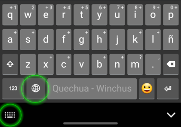
Si no tienes el botón para cambiar el teclado, haz lo siguiente:
(Nota que en algunos celulares esta opción no está disponible.)
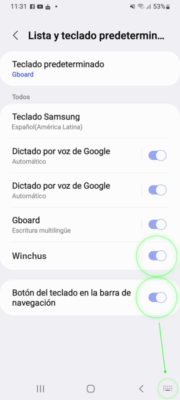
| Problema | Solución |
|---|---|
| Las letras que salen no corresponden con las teclas que estoy presionando. | Se ha congelado la imagen del teclado. Intenta lo siguiente. Después de cada paso, verifica si el problema se ha resuelto.
|
| Todo el área del teclado se ha puesto toda negra o gris. | Intenta lo siguiente. Después de cada paso, verifica si el problema se ha resuelto.
|
| Problema | Solución |
|---|---|
| Los atajos especiales no funcionan. (O sea, el teclado está funcionando como si fuera un teclado latinoamericano.) | Asegúrate de que el teclado Winchus esté seleccionado, mirando el rincón inferior derecho. Debe salir la letra W con el fondo verde. De no ser así, usa el atajo + Espacio. Verás la lista de teclados en la parte inferior derecha de tu pantalla. |
| Cuando quiero escribir símbolos o puntuación, salen otros no esperados. Por ejemplo, la ; sale cuando esperaba la ñ, y la ]c sale cuando esperaba la ć. (O sea, el teclado está funcionando como si fuera un teclado estadounidense.) | Aunque veas Winchus seleccionado en el rincón de la pantalla, Keyman no se ha ejecutado por completo. Haz clic en la app "Keyman" en el menú de inicio o en el escritorio. No saldrá nada, pero después de un momento el teclado debe empezar a funcionar. Si tienes este problema cada vez que prendes tu computadora, es posible que la computadora necesite un poco más de tiempo para terminar de prenderse, o que haga falta cambiar la configuración para que Keyman se ejecute automáticamente cuando se arranca la computadora. Verifica lo siguiente:
|
| No funciona en Adobe Acrobat Reader | Sigue los pasos en esta página |
| Todavía tengo problemas. | Asegúrate de que Keyman y Winchus estén actualizados.
|
Sí tu problema aún no se soluciona, por favor, comunícate con nosotros a través de la información de contacto al final.
Para problemas, preguntas, comentarios, y sugerencias, escribe a alex_larkin@sil.org. WhatsApp: +51.938.405.223. Por favor menciona en cuál idioma Quechua estás escribiendo e incluye ejemplos, si es relevante.
También puedes buscar en los foros de ayuda de Keyman y hacer tu propia pregunta si no encuentras la solución que necesitas. Haz clic aquí para entrar al foro. La mayoría de usuarios en esta página hablan inglés, así que es recomendable escribir en inglés o usar un traductor de máquina como Deepl.
¡Yulsulpallä! Muchas gracias.